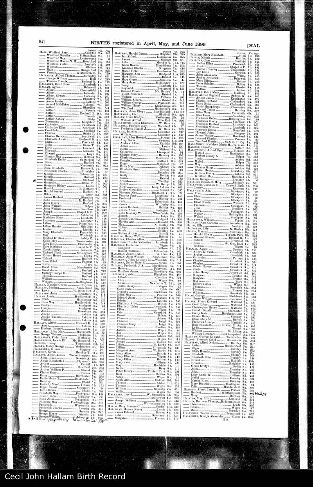

Arthur HALLAM b. 28/11/1861 d. Between 01/1909 and 1909
Arthur HALLAM b. 28/11/1861 d. Between 01/1909 and 1909 - Overview
| Name | Full Name | Arthur HALLAM |
| Forename | Arthur | |
| Surname | HALLAM | |
| Sex | Male | |
| Birth | 28/11/1861, Bilby, Barnby Moor, Blythe, East Retford, Nottinghamshire | |
| Death | Between 01/1909 and 1909, Eccleshall, Sheffield, Yorkshire, England | |
| Parents | William HALLAM x Maria REYNOLDS [Family] | |
| Spouse | Winefred Bridget REDDICAN b. 19/01/1866 d. 11/1910 [Family] | |
| Children | 1. Arthur Joseph HALLAM b. 22/05/1895 d. 03/01/1951 2. Francis (Frank) HALLAM b. Between 01/1897 and 1897 3. Cecil John HALLAM b. Between 1899 and 04/1899 | |
| Change Date | Date | 15/05/2011 |
| Time | 11:38 | |
Arthur HALLAM, 9th child of William HALLAM and Maria REYNOLDS [Family], was born on 28/11/1861 in Bilby, Barnby Moor, Blythe, East Retford, Nottinghamshire. He died between 01/1909 and 1909 in Eccleshall, Sheffield, Yorkshire, England aged about 48. Arthur was buried in Sheffield, Yorkshire, England. He resided in 1871 in Worksop, Nottinghamshire, England. Arthur was a Indoor Farm Servant in 1881. He resided in 1881 in Gildingwells, Yorkshire, England. He was a Carter in 1891 in Sheffield, Yorkshire, England. In 1891 Arthur resided in 8 St Charles Street, Sheffield, Yorkshire. In 1895 he was a Carter in Sheffield, Yorkshire, England. In 1895 he resided in 14 Stewart Road, Eccleshall, Sheffield, Yorkshire, England. Arthur resided in 1901 in 14 Stewart Road, Eccleshall, Sheffield, Yorkshire, England. In 1901 he was a Drayman. Arthur Hallam was born in the countryside in Bilby, Barnby Moor, Yorkshire in 1861 and was raised there and nearby in Worksop. He left home as a teenager and by 19 in 1881, he was working as an indoor farm servant for large farm run by John and Sarah Stacey at Gildingwells, Yorkshire. By 29 in 1891 he was living in 8 Charles Street Sheffield and working as a carter. Presumably this is where he met his wife Winifred Reddican who was working as a servant and living nearby with her mother in 23 Flora Street, Nether Hallam. They settled in a house in 14 Stewart Road, Eccleshall, Sheffield, Yorkshire where Arthur jnr was born in 1895, still working as a carter. By 1901 he is listed as a drayman (driving the cart for a brewery) and still at this address. Although he died young, some time over the next 10 years. 3 sons listed. |  |
Children
| i | Arthur Joseph HALLAM1 was born on 22/05/1895 in 14 Stewart Road, Eccleshall, Sheffield, Yorkshire, England. Arthur died on 03/01/1951 in 21 Rock Road, Booterstown, Dublin, Ireland aged 55. Arthur was buried on 04/01/1951 in Grave Space 14, Section M1, Plot St Itas, Deansgrange Cemetery, Dublin, Ireland. On 09/06/1895 Arthur was baptized in St Wilfreds, Sheffield, Yorkshire, England. On 09/06/1895 he was christened in St Wilfreds, Sheffield, Yorkshire, England. In 04/1901 Arthur resided in 14 Stewart Road, Eccleshall, Sheffield, Yorkshire, England. In 1905 he was a Merchant Navy. Arthur resided in 1905 in 69 Rock Road, Booterstown, Dublin, Ireland. On 22/06/1922 Arthur resided in 21 Rock Road, Booterstown, Dublin, Ireland. Arthur was a Collector for the Gas Company on 22/06/1922. He resided on 20/06/1932 in 21 Rock Road, Booterstown, Dublin, Ireland. In 1951 Arthur was a Collector for the Gas Company. He resided in 1951 in 21 Rock Road, Booterstown, Dublin, Ireland. |  | ||
| ii | Francis (Frank) HALLAM2 was born between 01/1897 and 1897 in 14 Stewart Road, Eccleshall, Sheffield, Yorkshire, England. |  | ||
| iii | Cecil John HALLAM3 was born between 1899 and 04/1899 in 14 Stewart Road, Eccleshall, Sheffield, Yorkshire, England. |  |
Notes
1. Arthur was raised in 14 Stewart Road, Eccleshall, Sheffield, Yorkshire (I fear this may be a car park now). His father, Arthur senior died young, and between 1901 and 1911 Arthur moved to Ireland with his mother Winifred and 2 brothers, Frank and Cecil. Initially they lived with their aunt Kate and her husband Thomas O'Neill at 69 Rock Road.(69 appears to be still there as an O'Neills builder/carpenter shop, although the original house was to the left of this shop which is since replaced by apartments). His mother died in 1910 leaving him an hius brothers living with his Aunt Kate O'Neill. By 1916 at the age of 20, he had joined the merchant navy and worked between Dublin and Liverpool on mail and cargo boats till 1919. By this time he was already an orphan and an Englishman living in Ireland at the time of the Easter Rising although his wife to be reported that there was very little unrest and/or early warning of the rising. He married Catherine Fogarty in Booterstown at the age of 24 in 1919 but continued to work as a sailor for another couple of years, now on long hawl cruises to Quebec and Argentina being away for months at a time. Having decided this was no life for a married man he gave up the navy and started a family with Catherine in 1922. In his merchant navy years he must have played some role in the World War I as in 1924 he was issued with a Mercantile Marine Medal and a British War Medal. (The Mercantile Marine Medal was awarded to merchant navies sailors who were involved in voyages through war/danger zones whereas the British War Medal was generally only awarded to members of the Royal Navy or those involved in clearing sea mines in the years 1919-1920). He never spoke of these medals or his war experiences to his children. In his married life he worked for the Gas Company as a collector and spent many summer holidsys in Wicklow helping with farming work for his wife's second cousin and friend, Tom McCaul. Much like his father Arthur senior, he died as a young man, in Booterstown.; [Note Record]
2. Born in Sheffield, Cecil loses his father at a very young age and is brought by his mother to Ireland to live with his aunt Kate.; [Note Record]
3. Born in Sheffield, Cecil loses his father at a very young age and is brought by his mother to Ireland to live with his aunt Kate. As an adult, Cecil moved back to Sheffield at some point. We believe he married Mary back in England.; [Note Record]
Web page generated using a registered copy of GedScape software, licensed by Mark Watkin